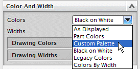
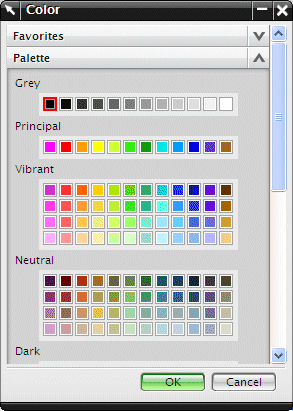
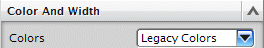

如果想要在绘图中使用不同的背景颜色，可以将颜色选项设置为定义调色板。

选择显示在颜色列表下方的定义调色板按钮。
点击定义调色板将会显示颜色对话框。

(这个对话框看起来与首选项→调色板对话框一样)
可以使用这个对话框来选择想要用在背景中的颜色，也可以将标准颜色更改为定制颜色。
如果您有一个较旧的部件，可能会想使用创建部件时指定给它的颜色，在这种情况下，可以将颜色选项设置为原有颜色。

如果您先前已经为图纸页定义了定制颜色，并且想在绘图中使用它们，可以—无需更改颜色选项—在图纸颜色子组中打开使用图纸页颜色选项。